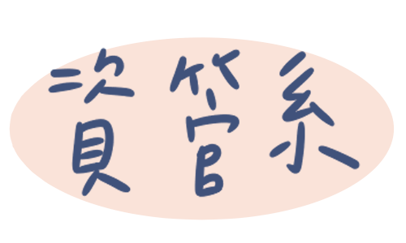
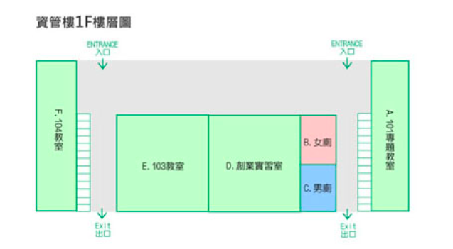
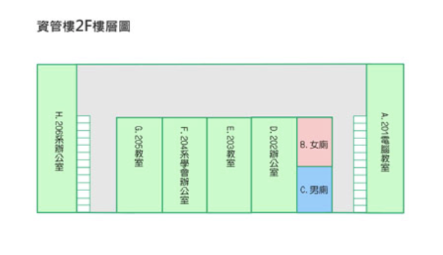
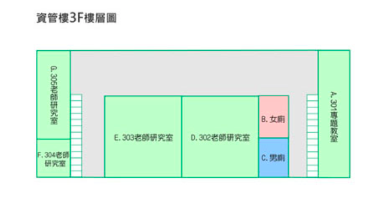
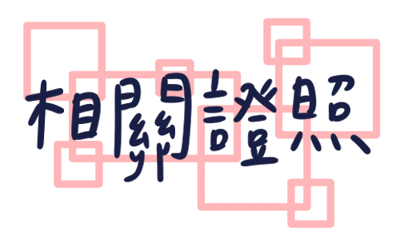
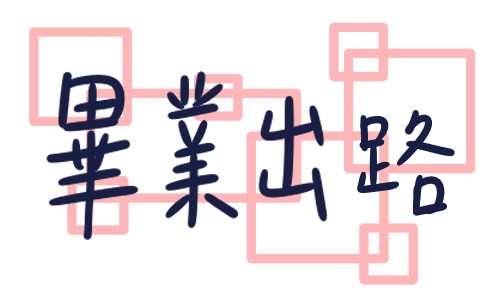
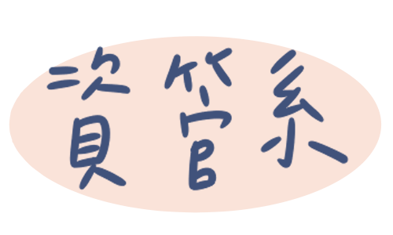
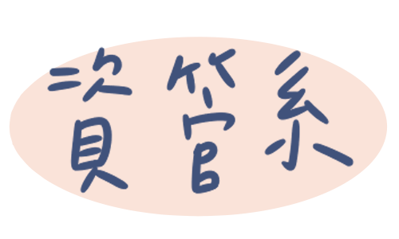

資訊管理系自76年創立。
以專業師資的教學與研究，服務資管系各級學生的專業與人格成長，
平日同學的積極 投入各項學習、服務、與學術活動，俱為資管系持續成長發展的基礎。
特色是服務學習中強調「從做中學」，就業學程落實「學用合一」。
108學年度註冊率100%
資管系跟其商學院系最大的不同是，資管系有一棟資管樓。

 １.軟體品質工程師(CSQE)
２.電腦軟體設計技術士
３.電腦軟體應用技術士
４.電腦軟體設計技術士-Java
５.電腦軟體設計技術士-C++
 網路管理-MIS工程師、網路管理工程師
系統規劃-系統工程師、系統分析師
軟體工程-網站程式設計師、APP工程師
美編設計-多媒體動畫設計師、網頁設計、商業設計
參考網址：
https://im.cycu.edu.tw
https://university.1111.com.tw/univ_depinfo6.aspx?sno=100507&mno=480109
 
